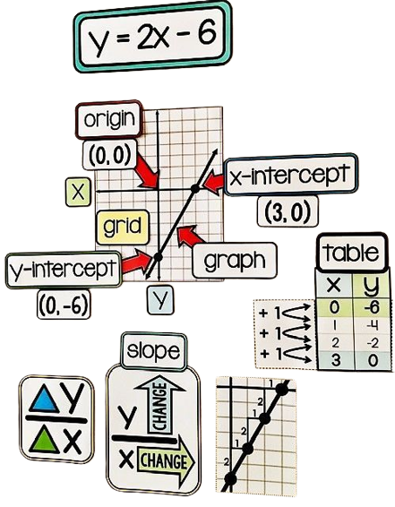

Basic Concept:Linear equations describe a relationship between two variables with a constant rate of change. When graphed, they form a straight line, which is why they are called linear equations.
Slope-Intercept Form: The most common way to represent a linear equation is in the slope-intercept form, y = mx + b, where "m" is the slope of the line, and "b" is the y-intercept, the point where the line crosses the y-axis.

Slope: The slope (m) of a linear equation represents the rate at which one variable changes concerning the other. A positive slope indicates an upward slant, while a negative slope represents a downward slant.
Intercept: The y-intercept (b) is the point where the line crosses the y-axis. It gives the value of y when x is zero. The x-intercept (if any) is where the line crosses the x-axis, and it indicates the value of x when y is zero.
Parallel Lines: When two linear equations have the same slope, their graphs are parallel. They will never intersect, as they have the same rate of change.
Perpendicular Lines: When two lines have slopes that are negative reciprocals of each other (i.e., the product of their slopes is -1), they are perpendicular. They intersect at a right angle.
Real-Life Applications: Linear equations are widely used in fields like physics, engineering, economics, and more. They help model and solve problems related to motion, cost analysis, and predicting future trends.